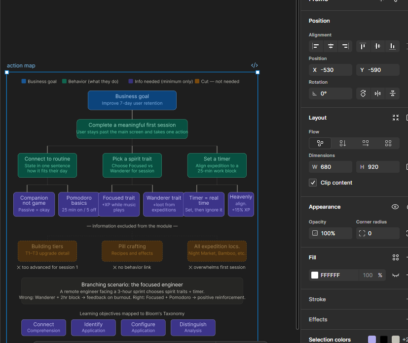
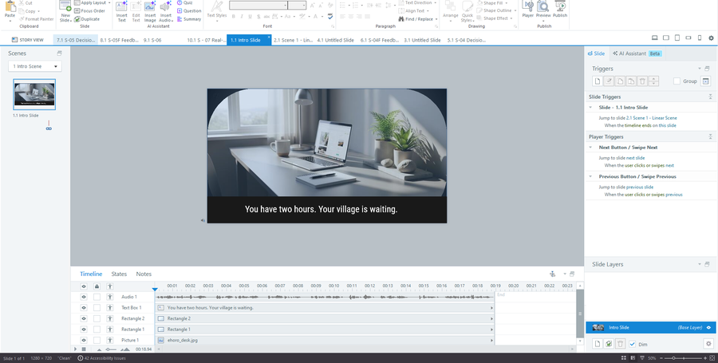
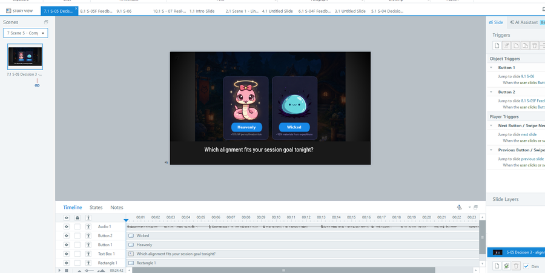
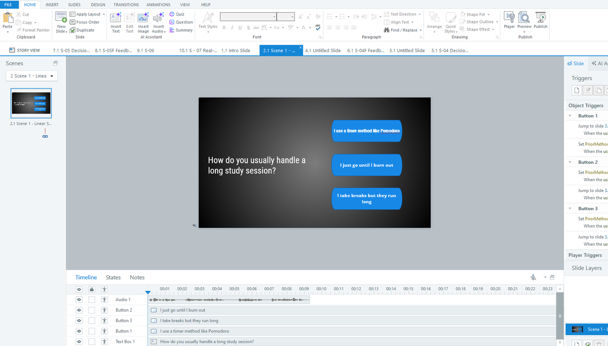

Learning Experience Design · Research · Product
New users were leaving in their first session — before they ever understood what the product was. I designed an interactive onboarding module that taught them through experience, and lifted 7-day retention 35%.
The Problem
Ehoro Village is a browser-based idle cultivation game built to work as a study companion — pairing lo-fi music with passive spirit management to help users focus. The core loop is genuinely good. But new users weren't reaching it.
Working with our engineering team, I found a sharp drop-off among users who'd played less than 30 minutes. Users who pushed past that threshold understood the value and kept coming back. The ones who left early never got far enough to experience the Pomodoro-aligned timer, the spirit traits, or the ambient focus loop that makes the product useful.
My research into organic users — people who found Ehoro Village with no prior context — surfaced the real issue. They couldn't answer one question in their first session: what is this, and why does it belong in my life?
That wasn't a UI problem. You can redesign a landing page. You can write better tooltip copy. But you can't write your way into making someone feel the value of something they haven't experienced yet. That insight drove everything — not a UI refresh, but an interactive experience that let new users feel a real session before committing to one.
My Process
Before opening a design tool, I mapped the core game flow in Figma — what a user needs to experience in their first 30 minutes to understand the value. I built a persona of the target audience — college-aged to early professional, 18–25 — and brought two questions to engineering: what makes users come back, and what do early-leavers miss? Their answers confirmed my research. I wrote a formal Needs Analysis defining the problem, the audience, and three measurable learning objectives.
Performance Objectives — observable, testable behaviors
Artifact: Needs Analysis document — business problem, audience profile, Bloom's-aligned objectives.
I used Cathy Moore's Action Mapping to connect every piece of content to a behavior. Anything that didn't link to a measurable action got cut — building tiers, pill crafting, expedition locations all stayed out. The scenario placed the learner in a familiar moment: a student facing a two-hour study sprint, needing to configure their village to focus. Three decisions, each with a correct path and an explanatory wrong path. Full branching decision tree storyboarded in Figma before a single slide was built.

Action Map — Cathy Moore's framework. Every content node connects to a behavior. Cut nodes at the bottom.
Artifact: Action Map · Visual Storyboard with full branching tree and narration scripts.
Built in Articulate Storyline 360, SCORM-compliant, with custom navigation and interaction states matching Ehoro Village's dark lo-fi aesthetic. A Focus Score variable accumulates across all three decisions and carries into the learner's real Ehoro Village profile. AI-augmented production: narration via ElevenLabs, scripting iteration with Claude, spirit art generated to match the visual language.


Left: intro slide with auto-advance narration. Right: alignment decision — Heavenly vs Wicked with real spirit art.

Prior knowledge screen — all three triggers visible in the right panel, PriorMethod variable set per button.
Artifact: Live Articulate Storyline 360 module — custom nav, branching logic, Focus Score variable, SCORM packaged. Try it →
Kirkpatrick-aligned evaluation across all four levels. The anchor metric was 7-day retention among new organic users who completed the module versus those who entered directly. Google Analytics tracked session depth, return rate, and first-session engagement across both cohorts.
Key Design Decisions
01 — Scope ruthlessly
Teach the one thing that drives retention.
Ehoro Village is rich — traits, alignments, building tiers, crafting, expeditions. None of it belonged in this module. The Action Map made the cut easy: if content didn't connect to a successful first session, it was out. Narrow scope was the most important decision I made.
02 — Experience over information
A tooltip can't make you feel value.
I could have shipped better UI copy. I didn't believe it would work. The problem wasn't missing information — it was missing experience. A scenario where you make real decisions and see real consequences does something static copy fundamentally cannot.
03 — Product, not training
The audience won't tolerate compliance-ware.
Custom navigation, the brand-matched aesthetic, the Focus Score carrying into the game — every decision asked what a user expects from a good product, not what a learner expects from corporate training. The audience is 18–25. The module had to earn attention the way the product does.
Results
Users who completed the module spent longer in their first session and returned more often than those who entered directly — validating the hypothesis that orienting users around the core loop before their first real session drives retention.
First-session duration rose roughly 40% among completers — pushing the majority past the critical 30-minute threshold engineering had identified as the line between churn and retention.
Reflection
I'd involve users earlier — the scenario was built on research and engineering data but wasn't usability-tested before development. A lightweight test round on the storyboard would have surfaced friction before it was built in. And I'd explore weaving the module into the first real session rather than gating before it — the most powerful version of this intervention might not be a pre-onboarding step at all.